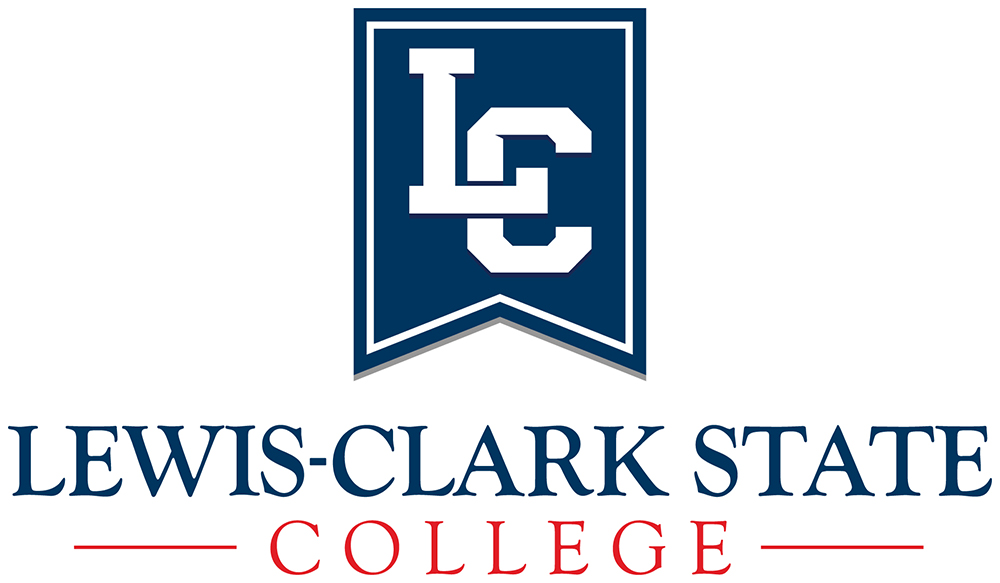

DeLaney Jones
dbjones2518@lcmail.lcsc.edu | 509-295-3411 | GitHub: DeLaneyBJones | Handshake: 16903297 | delaneybjones.netlify.com
Education
BACHELORS OF SCIENCE IN COMPUTER SCIENCE | ANTICIPATED SPRING 2020 | LEWIS-CLARK STATE COLLEGE
ASSOCIATES OF APPLIED SCIENCE IN WEB DESIGN AND DEVELOPMENT | ANTICIPATED SPRINT 2020 | LEWIS-CLARK STATE COLLEGE
Grants
Higher Education Research Council undergraduate research award 2017
Higher Education Research Council undergraduate research award 2018
INBRE Summer 2018 Undergraduate Fellowship grant
Poster Presentations “CASTER - Computer Assisted Segmentation Tool Environment Revisited”
2018 ICUR Conference
2018 INBRE Conference
2019 ICUR Conference (Upcoming Summer 2019)
Skills and Languages
Python
Processing
Java
C++
HTML
SCSS
PHP
JavaScript
SQL
C
C#
Relevant Courses
Precalculus
Calculus 1
Discrete Mathematics
Linux and Tools
Foundations/Programming
Operating Systems
Software Engineering
Databases and Knowledge Managment
Introduction to Bioinformatics
Capstone Design
Human Relations and Organizations
SQL: Structure Query Language
Awards
President’s List: Fall 2016, Spring 2017
Dean’s List: Fall 2017, Spring 2018, Fall 2018
Job Experience
Research Assistant | LCSC | March 2016 - Current
Sandwich Artist | Subway | June 2015 – August 2015
References Available Upon Request
Who am I?

My name is DeLaney Jones, and I am studing at Lewis-Clark State College. I will graduate in 2020 with an Associates in Web Design and a Bachelors in Computer Science. Currently I work for Dr. Seth Long as a Research Assistant. We are working on a program called CASTER (Computer Assisted Segmentation Tool Enviroment Revisited). The goal of this program is to outline rod spherules within mouse eyes for further study. I have attended several research confrences to present our works, which as been well received.
My education
I started gaining an interest in computer science in juionor high. I wanted to know how the computer worked on the inside, and started keeping a journal about computer facts. I continued working on filling up my journal through high school, but dropped it when I started college. I took my first year at Walla Walla community college, and then took a year off for medical reasons. Durring that time, I was homeschooling my little sister through Preschool. However, I was diapointed in the resources I could find to teach her. This encouraged me to create my own games that met her needs and kept her interest. Since then, I have been working on creating a Monster School series to provide those games and more to other children who can use them.


My Drawings
I drew the turtle in the upper left hand corner based on a photo from Altru Vistas Cuba Oceanic Society. I see turtles as a symbol of freedom, so I really like them. They are beautiful and elegant, and I feel honored to represent them in drawings. This particular drawing took about six months to complete, and I used colored pencils as my medium.

My Kitten
In around June of 2018, a litter of kittens showed up in my backyard. I took most of them to the animal shelter, but I feel in love with this one. I named her Sophia, and we are very close. She provides me with a time-based routeen, which really helps me. I'm training her to follow simple commands, and she is already leash trained. If I am home, she is never far from me.

Challenges
I made this dessert because I found heavy whipping cream in the fridge that needed to be used up. I wanted to see what I could do, and eventually ending up with this as my end product. It is a chocolate bowl filled with three layers: chocolate moouse, raspberry moouse, and marshmallow moouse, and topped with a swirl of whipped cream and a raspberry cream chocolate.